A step-by-step guide for owners, managers, sales staff, technicians and store keepers. It covers sales, IMEI stock, purchases, repairs, warranties and reports.
About the screenshotsThe pictures in this manual were taken from a demo copy filled with sample customers, staff and stock, so the names and amounts are examples. Your screens look the same, with your own data. Some buttons only appear for roles that are allowed to use them (see chapter 2).
1Getting started
The ERP runs in a web browser, so there is nothing to install. Use Google Chrome or Microsoft Edge on the shop PC, a tablet or a phone.
Signing in
Open https://erp.singtelmobile.com. Bookmark it, or pin it to the taskbar.
Type your Username and Password. The eye button shows the password so you can check what you typed.
Click Sign in →. The system opens the first screen your role is allowed to use.
The sign-in page
Keep accounts personalEvery staff member gets their own username. The system records who made each sale, repair and change, so never share a login. If you forget your password, ask the administrator to reset it. A session stays signed in for up to 12 hours.
Change your own password
Click your round avatar (your initials) at the top right.
Choose Change password. Enter the current password, then the new one twice. It must be at least 8 characters.
Click Update password. Any other devices signed in with your account are signed out.
The same menu has My permissions, which shows exactly what your role can do, and Sign out.
A tour of the screen
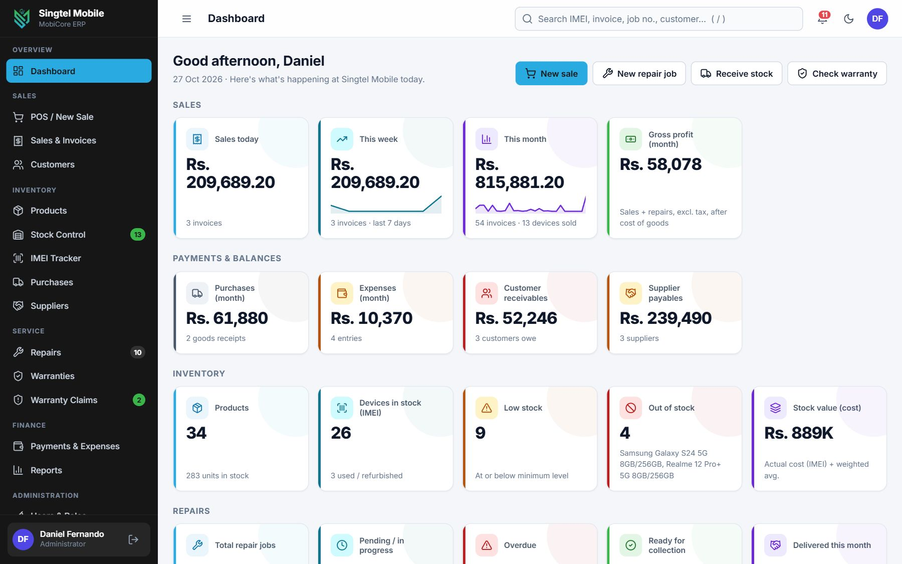
The Dashboard: today's sales, stock alerts, repairs needing attention and warranties at a glance
Part of the screen
What it does
Menu (left)
The modules: Sales, Inventory, Service, Finance and Administration. Numbers on the menu show items needing attention, such as low stock, open repairs and pending claims. You only see the modules your role allows.
☰ button
Shrinks the menu to icons or opens it again. The menu also closes by itself 10 seconds after the mouse leaves it, which gives you more working space.
Search bar
Finds anything: an IMEI, invoice, repair job number, warranty or customer. Press / on the keyboard to jump to it. Type at least 2 characters, then use the arrow keys and Enter.
Bell
Alerts: low or out-of-stock items, overdue repairs, devices ready for collection, warranties expiring, claims waiting and customers owing money.
Moon / sun
Switches between light and dark mode.
Keyboard shortcuts
F2 opens the POS. / opens search. Esc closes a window.
Everyone sees the same live dataThe screen refreshes with other staff members' changes every 45 seconds. For example, a sale made at the counter appears on the manager's PC within a minute.
Using a phone or tablet
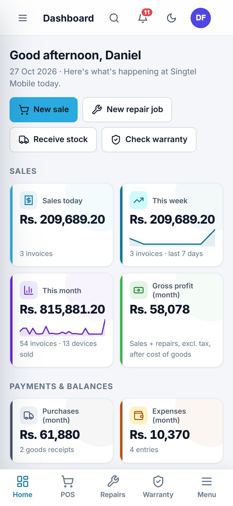
Phone view with the bottom bar
On a phone, the four screens you use most appear in a bottom bar, such as Home, POS, Repairs and Warranty. Tap Menu for everything else.
Buttons are sized for fingers, and tables turn into easy-to-read cards. In the POS, the cart opens from the floating Cart button.
With Chrome on Android you can also use the phone camera to scan IMEI barcodes (see chapter 8).
2Who can do what (roles)
Each staff account has one role. The role decides which menus, buttons and figures a person sees. The system comes with five roles, and the administrator can adjust them or create new ones (chapter 16).
Role
Typical person
Can do
Administrator
Owner
Everything, including staff accounts, permissions and settings.
Store Manager
Shop manager
Runs daily operations. Sales, including refunds, cancellations and approvals. Stock, including approving adjustments. Purchases and suppliers. All repairs, including assigning technicians and delivery on credit. Warranty claim decisions. Expenses. All reports, including profit. Can view (not change) users and settings.
Sales Executive
Counter staff
POS sales (no price changes), customers, taking in repairs, printing and delivering repairs, warranty checks and registering claims. Cannot see cost prices or profit, and cannot refund.
Technician
Repair technician
Their assigned repair jobs: view, update, print and deliver. Can look up stock, products, customers and warranties.
Store Keeper
Stock person
Products, stock (requests adjustments, which a manager approves), purchases and receiving stock, suppliers.
"Access denied" messagesIf a button is missing, or you see "Access denied — your role does not have … permission", your role isn't allowed that action. Ask the manager or administrator. This is how the system protects cash, prices and stock.
Things only managers can approve
Refunds, returns and cancelling an invoice. Cancelling an invoice from a previous day needs Sales Approve.
Changing a selling price or giving a discount at the POS (POS Edit).
Stock adjustments such as damaged, missing or count corrections (Inventory Approve).
Approving or rejecting warranty claims, and extending warranties (Warranties Approve).
Handing over a repaired device while money is still owed (Repairs Approve).
Seeing cost prices, profit and the profit & loss report (Reports Manage).
3Everyday quick guide
Keep this page near the counter. It tells you where to go for the jobs you do every day.
I want to…
Go to
Chapter
Sell a phone or accessory
POS / New Sale (or press F2) → add items → choose warranty → Charge
4
Give a % discount / special offer
POS → Discount → choose % → type e.g. 10
4
Give a customer a price quote
POS → add items → Quotation
4
Reprint an invoice
Search the invoice number → Print / PDF
5
Take back an item / refund
Invoice → Return / refund (manager)
5
Receive new stock from a supplier
Purchases → Receive stock → scan IMEIs
8
Find where a phone is / who bought it
Type the IMEI in the search bar, or use IMEI Tracker
Check the bell and Dashboard: repairs overdue or ready, low stock, claims waiting.
Call customers whose devices are Ready for Collection.
Closing
Record the day's expenses.
Open Payments & Expenses → Cash summary → Today and match the cash in the drawer.
Update repair job statuses before leaving.
Sign out on shared PCs.
4Selling at the POS
Open POS / New Sale from the menu, or press F2. Products are on the left and the current sale (the cart) is on the right.
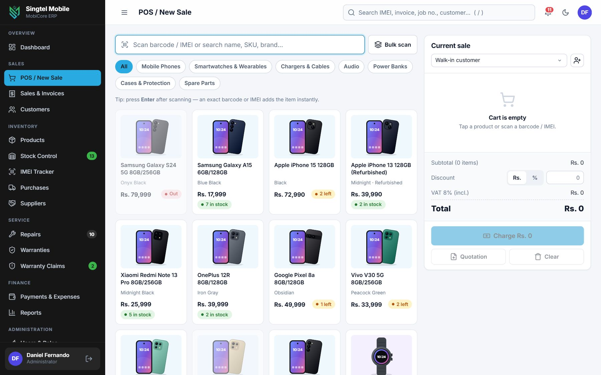
The POS screen
Step 1: Add items
Scan: click the search box, scan the barcode or the phone's IMEI and press Enter. An exact IMEI adds that exact phone. A barcode adds the product.
Search: type a name, brand or code, then tap the product card. The chips (Mobile Phones, Audio…) filter by category.
Phones: tapping a phone opens Select IMEI. Pick the exact unit you are handing to the customer.
Many phones at once:Bulk scan lets you scan several IMEIs in a row, then Add n to cart.
Accessories: use + / − to change the quantity.
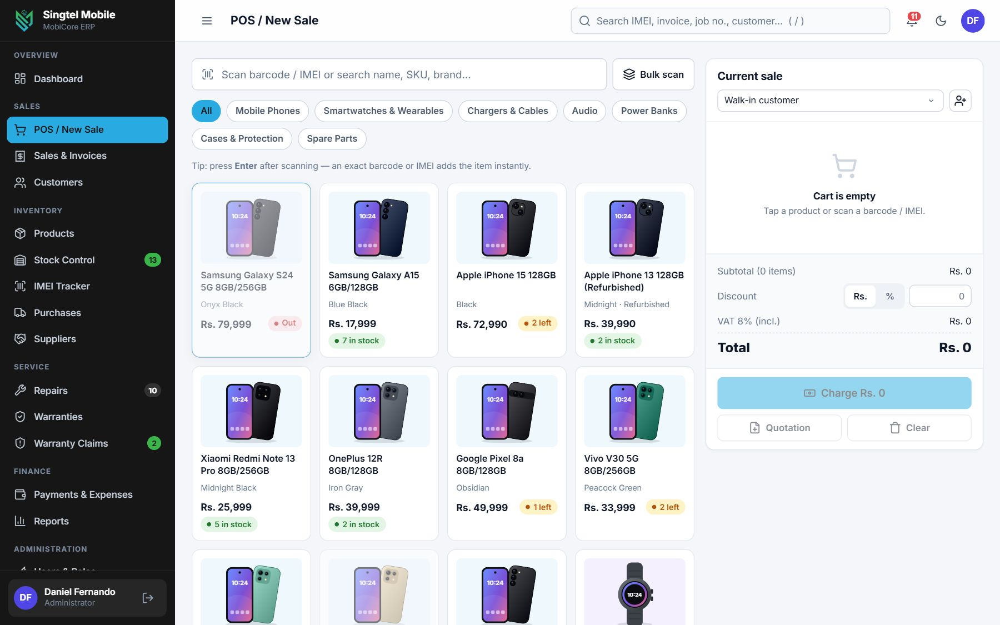
Choosing the exact IMEI for a phone
Each phone is sold against its own IMEIThe system will not sell an IMEI that is not in stock, and the same IMEI cannot go into the cart twice. This protects you from selling a phone that was already sold, returned or is in repair.
Step 2: Choose the warranty for every phone (required)
Each phone line in the cart has a warranty period box. Choose No warranty, 1, 3, 6, 12, 18 or 24 months, or the product's standard period, which is marked "(standard)". The warranty starts on the sale date, and the box shows the start and end dates.
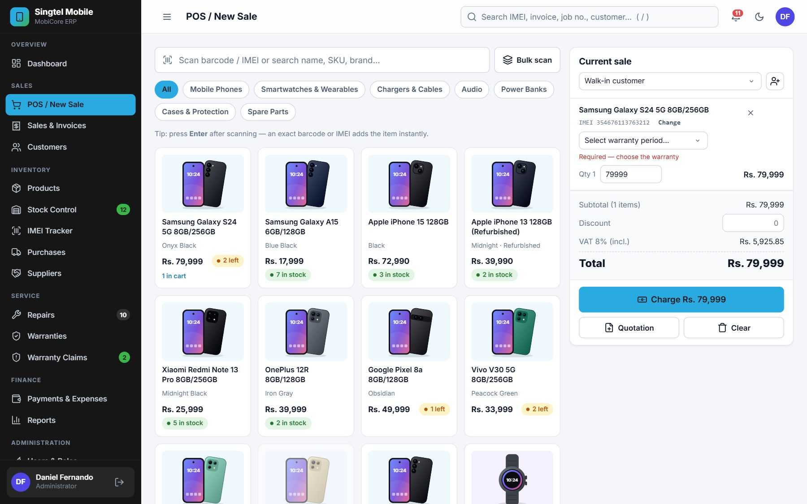
A phone in the cart, waiting for its warranty period ("Required — choose the warranty")
You cannot charge until every phone has a warranty choiceIf you forget, the system says "Select the warranty period for n phone(s) before charging." Accessories automatically get the product's standard warranty.
Step 3: Customer, discount and payment
Choose the customer, or leave Walk-in customer. For a new customer, click the person-plus button and save their name and phone. Linking a customer is recommended for phones, because the warranty is then tied to their name and phone number.
If allowed for your role, change a price or give a Discount. Use the small switch next to the discount box:
Rs. takes off a fixed amount, for example Rs. 1,000.
% takes off a percentage for offers, for example 10. The cart shows Discount (10% off) and how much the customer saves, and the invoice prints the same.
The system warns you if a price is below cost.
Click Charge Rs. …. In Take payment, enter the amount for each method: Cash, Card, Bank Transfer or Mobile Wallet. Split payment lets the customer pay part cash, part card. The quick cash buttons fill in common notes, and the change is calculated for you.
If the customer pays only part now, tick Record the unpaid balance as customer credit. This needs a registered customer, not a walk-in.
Click Complete sale.
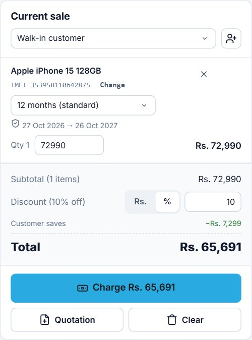
A 10% offer in the cart. VAT is switched off here, so no VAT line is shown.
VAT lineWhen VAT is switched on in Settings, the cart shows the VAT amount (for example "VAT 8% (incl.)"). When it is switched off, no VAT is charged and the VAT line disappears from the cart, the invoice and the PDF.
Step 4: After the sale
The Sale completed window shows the invoice number (INV-…), the change or balance, and how many warranty records were created. Click Invoice to print, PDF to download, or Warranty card to print the customer's warranty certificate. Click New sale for the next customer.
Quotations
Add items to the cart and click Quotation. A quote (QT-…) valid for 7 days is saved and can be printed or sent as a PDF. The cart is kept, so you can still complete the sale. Later, open Sales & Invoices → Quotations and click Load in POS to turn the quote into a sale.
5Invoices, returns & refunds
Sales & Invoices lists every invoice. Managers see all staff; sales staff see the invoices they created. The tabs are Invoices, Quotations and Returns & refunds.
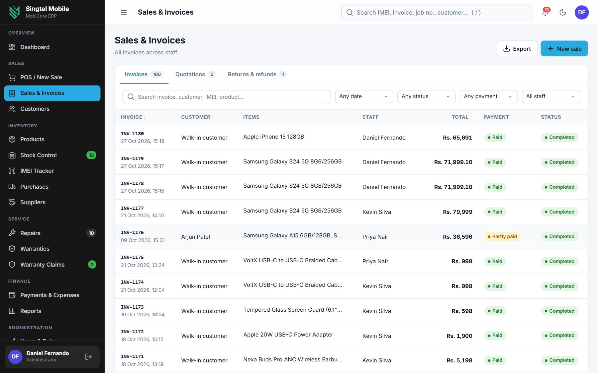
Invoice list with date, status, payment and staff filters
Inside an invoice
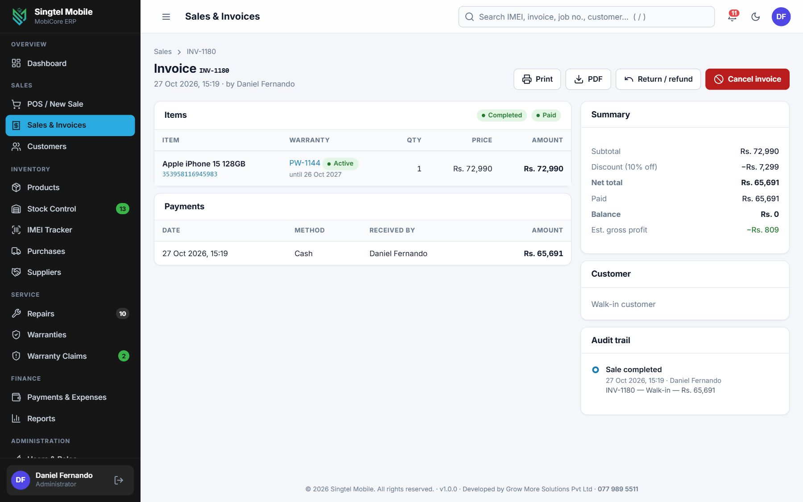
An invoice: items with their warranty, payments, summary and audit trail
Button
Use it to…
Print / PDF
Reprint the invoice or save it as a PDF to send by WhatsApp or email.
Receive payment
Record money paid later against a balance due.
Return / refund
Take back some or all items. Tick the phones to return or enter accessory quantities. Choose where the stock goes: Sellable stock, Hold for inspection or Damaged / defective. Then choose the refund method and type a reason. Warranties of returned phones are cancelled automatically.
Cancel invoice
Cancel a wrong sale completely. Stock is restored, warranties are voided and payments are refunded. A reason is required. Invoices from a previous day need manager approval. If anything was already returned, use Return / refund instead.
How a bill shows discount and VATA percentage discount prints as Discount (10% off). When VAT was charged, the document is titled Tax Invoice and shows the VAT line at the rate used on that day. When VAT was off, it is titled Invoice with no VAT line. Each invoice keeps the VAT it was billed with, so turning VAT on or off later never changes old bills.
Nothing is ever deletedCancelled and refunded invoices stay in the list with their status and an audit trail of who did what and when.
6Customers
Every customer has one record holding their invoices, phones, warranties, repairs and claims. Search by name or phone at the counter.
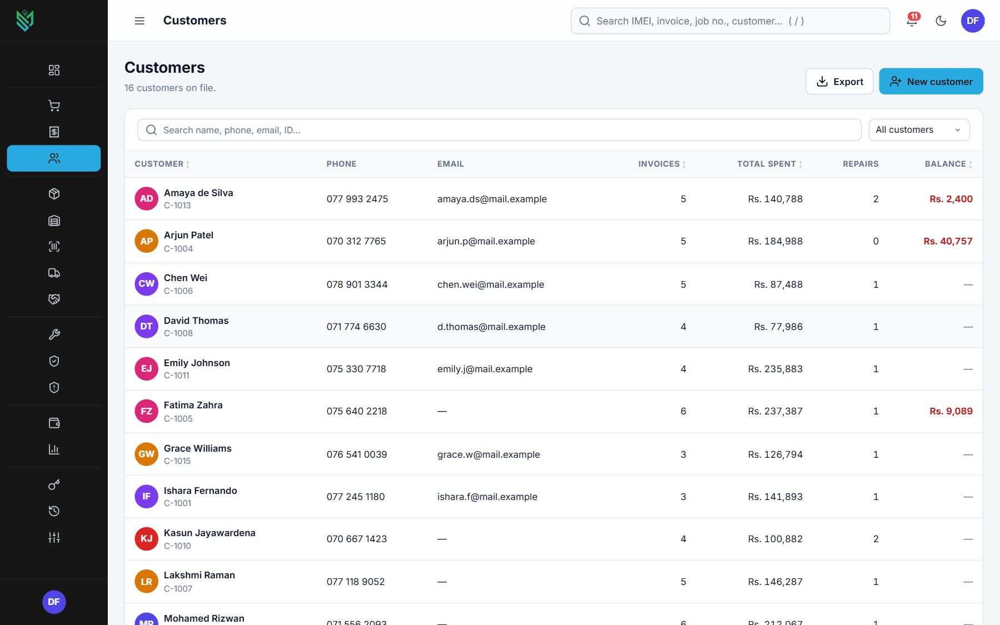
Customer list. "With balance due" shows who owes money.
Add a customer
Click New customer. You can also add one from the POS or the repair form.
Enter the Full name and Phone number (required). Email, address and notes are optional.
Click Save customer. Each phone number can belong to one customer only, so the system tells you if the customer already exists.
The customer page
Tabs: Overview, Invoices, Devices & warranties, Repairs and Claims.
Statement / PDF prints an account statement with every invoice, payment and balance.
Receive payment applies money to the oldest unpaid invoices and repair jobs first.
New sale and New repair start a sale or repair with this customer already filled in.
7Products
A product is a model you sell, for example "Samsung Galaxy A15 6GB/128GB Blue". Individual phones (units) are added when you receive stock (chapter 8). You don't create them here.
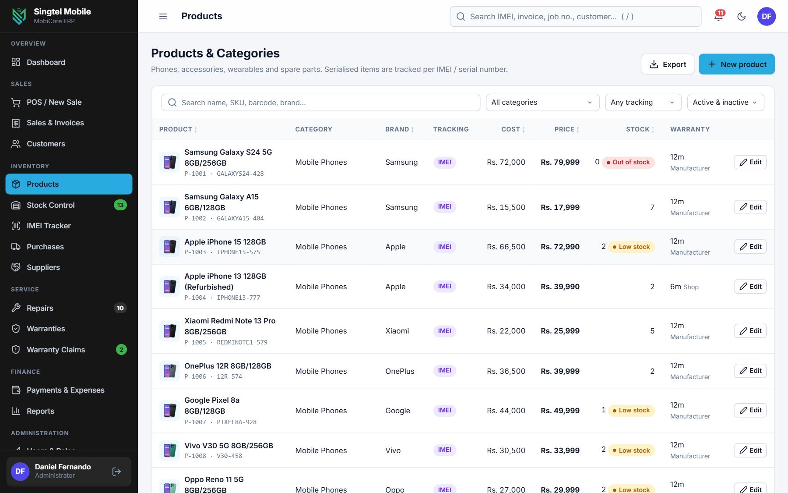
Products with category, tracking type, price, stock and warranty
Add a product
Click New product.
Basic information: name, category, brand, model, variant, colour, storage, RAM, condition (New / Used / Refurbished) and default supplier. Leave Product code blank to number it automatically.
Serialised — IMEI for phones. Every unit is tracked by its IMEI.
Serialised — Serial no. for watches and similar items with serial numbers.
Quantity-based for accessories (chargers, cables, cases).
Also set the barcode / SKU and a Minimum stock level, which triggers the low-stock alert.
Warranty: standard months, who provides it (Manufacturer / Distributor / Shop), the warranty for used or refurbished units, and the warranty days when the item is fitted as a repair part.
Add a photo and description, keep Active ticked, and save.
Category
Default warranty
Category
Default warranty
Mobile Phones
12 months
Power Banks
6 months
Smartwatches & Wearables
12 months
Audio
6 months
Chargers & Cables
6 months
Cases & Protection / Spare Parts
none
Tracking type is fixed once stock existsAfter a product has stock history, its tracking type (IMEI / serial / quantity) cannot change. A product with history cannot be deleted either; it is deactivated so old invoices stay correct.
8Receiving stock & purchases
Stock enters the system only through Purchases → Receive stock. This is where every phone's IMEI is recorded, which makes it the most important step for accurate stock and warranties.
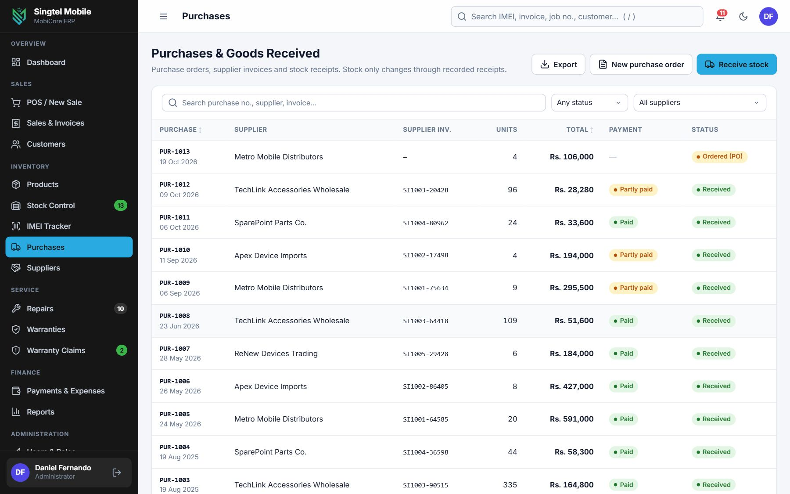
Purchases & Goods Received
Receive stock (goods received)
Click Receive stock. Choose the Supplier, then type the supplier's invoice number and the received date.
For each model, choose the Product and enter the Quantity, Unit cost and, for phones, the Condition. Use Add line for more models.
For phones, enter the IMEI numbers, one per line. For dual-SIM phones type IMEI1, IMEI2. Or use Bulk scan IMEIs (below). The system checks each number as you go: "✓ All numbers valid", invalid numbers, duplicates, or IMEIs already registered.
Payment to supplier: enter the amount paid now and the method. Leave 0 to record the full amount as payable.
Click Receive into stock. The phones are now in stock and ready to sell.
Bulk IMEI scanning
Bulk scanning is the fastest way to receive a box of phones of one model. It opens from Bulk scan IMEIs, and the same scanner is used in the POS and for stock checks.
USB or Bluetooth barcode scanner: just scan each box. Every scan adds one unit and beeps.
Paste a list: paste IMEIs copied from the supplier's Excel or email. Spaces, commas and new lines are all accepted.
Camera: on Chrome for Android, tap Camera to scan with the phone.
Dual-SIM boxes: tick the option and scan IMEI 1 then IMEI 2 for each phone.
Wrong numbers are rejected with a reason, for example "Invalid IMEI — check digit failed", "Already registered" or "Already scanned in this batch". Click Use n units to finish. The line quantity is updated to match.
One IMEI can only exist onceThe system blocks a duplicate IMEI or serial number, even from a different supplier. If you see "already registered", check the box: it may be a returned or previously sold unit.
Purchase orders, supplier payments and returns
New purchase order records an order before the goods arrive. Stock doesn't change until you open the order and click Receive this order.
Pay supplier on a purchase records a payment against what you owe.
Return to supplier (manager) sends units back, including faulty warranty-return phones (RMA). Tick the units, give a reason, and the supplier balance is credited.
Suppliers in the menu lists each supplier with total purchased, paid and outstanding.
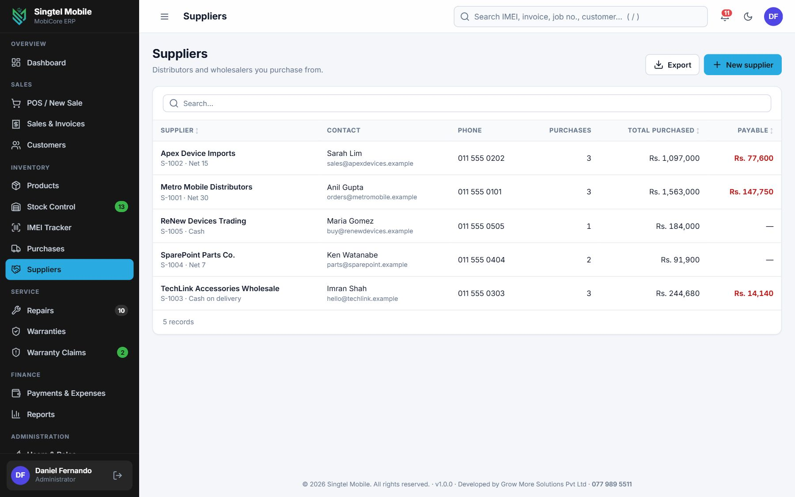
Suppliers and amounts payable
9Stock control & stock checks
Stock Control shows stock levels, every stock movement, and adjustments. The menu number shows how many products are low or out of stock.
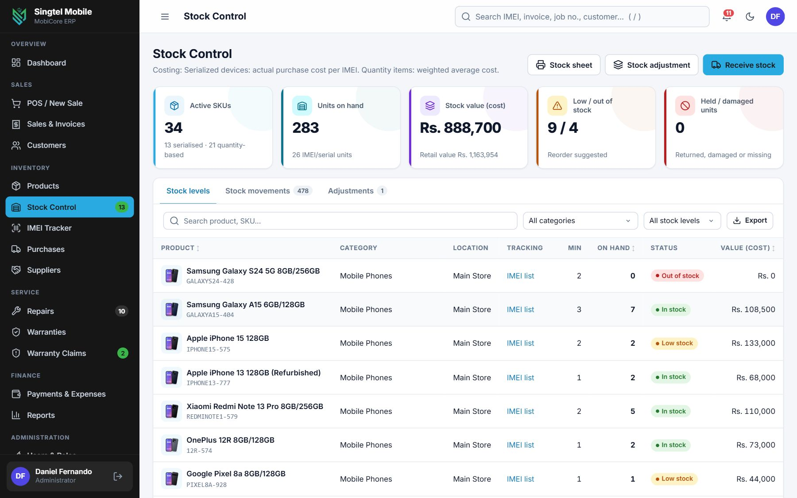
Stock levels with low-stock and out-of-stock alerts
Correcting stock (adjustments)
Click Stock adjustment and choose the product.
For a phone, choose the exact IMEI and the type: Damaged, Missing, Mark defective or Return to stock. For accessories, enter the quantity change (for example -2 or +5) and the type: Damaged, Missing, Found / count correction, Internal use or Opening stock.
Type the Reason and click Submit adjustment.
Manager approvalAdjustments from staff wait in the Adjustments tab until a manager clicks Approve or Reject. Managers' own adjustments apply immediately. Stock can never go below zero.
Counting stock
Accessories:Stock sheet prints a count sheet with Counted and Notes columns.
Phones (IMEI audit): in IMEI Tracker click Stock check (bulk scan), choose the model or shelf, and scan every phone on the shelf. Each scan shows in stock ✓, Wrong shelf, system says sold / in repair… or NOT IN SYSTEM. The result lists phones that are missing (in the system but not scanned). Export result saves it. The stock check itself changes nothing, so you can run it as often as you like.
10IMEI Tracker
Every phone the shop has ever received is listed here with its full life story: purchase, sale, repairs, warranty, returns and replacements.
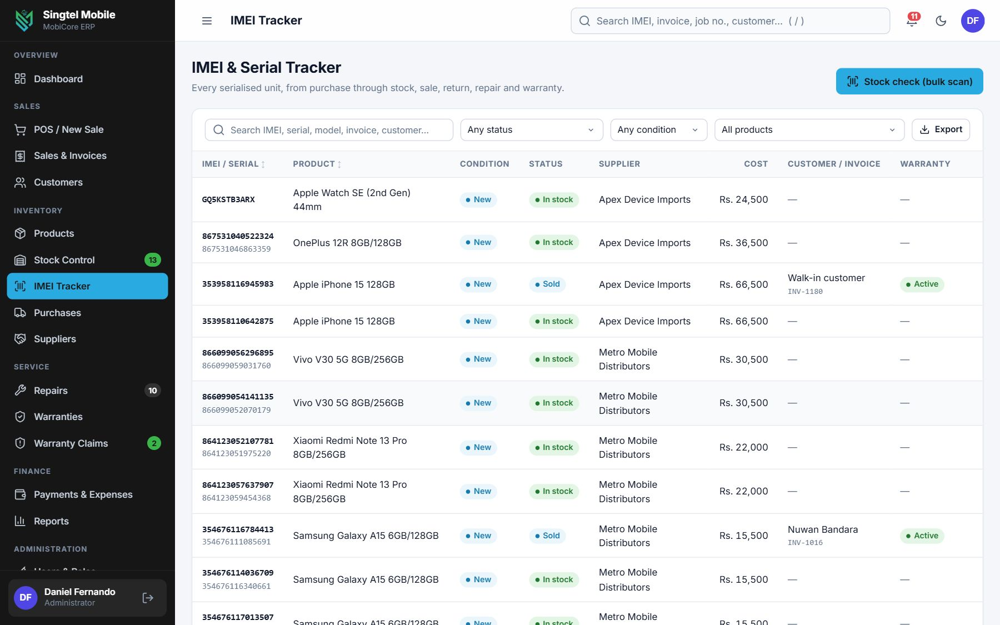
IMEI & Serial Tracker with status, condition and product filters
Search by IMEI, serial, model, invoice or customer, or just type the IMEI in the top search bar from any screen.
Statuses: In stock, Sold, Returned (inspection), Damaged, Missing, Under repair, Returned to supplier, Warranty return (defective).
Open a unit to see who supplied it and when, who bought it, its warranties and repairs, and the Device timeline of every event with time and staff name.
For a phone the shop sold, New repair for this device starts a repair job straight away.
Customer says "I bought this phone here"?Search the IMEI. You will instantly see the invoice, the sale date and whether the warranty is still valid.
11Repairs
Repairs tracks every device from intake to hand-over. Switch between the List and the Board (columns by stage). Technicians see their own jobs and unassigned jobs; managers see all of them.
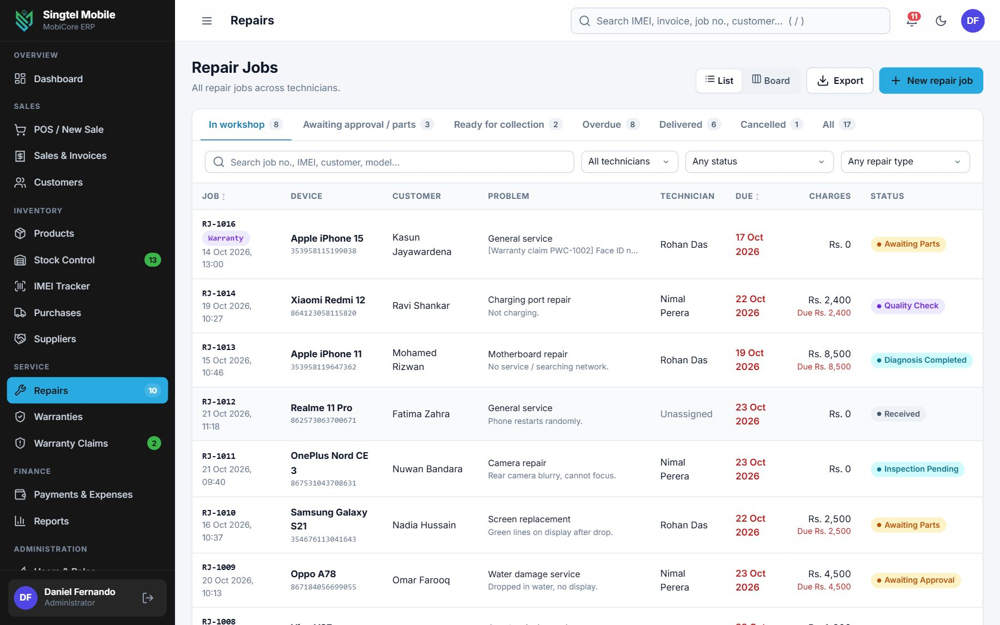
Repair jobs with tabs for workshop, approval / parts, ready, overdue and delivered
Take in a device (new job card)
Click New repair job.
Customer: choose the customer or add a new one.
Device: IMEI (dial *#06# on the phone) or serial number, brand, model, colour, repair type, priority (Normal / High / Urgent), expected completion date, and the accessories received (SIM tray, back cover, charger, box…).
Problem & condition: the customer's complaint, physical condition and existing damage. Add photos of scratches or cracks.
Estimate & approval: estimated cost, advance payment, and technician (managers). Tick Customer approves the estimated cost if they agreed.
The customer must accept the repair terms (data loss, uncollected devices, warranty conditions). Tick the box.
Click Create job & print receipt. Give the customer the job receipt with the job number (RJ-…).
Smart IMEI checkWhen you type the IMEI, the system warns you if the device already has an open job, was sold by us and is still under warranty (register a warranty claim instead of charging), has an active repair warranty, or was repaired before.
Grey stages are optional and are marked "skipped" if not used. A job can also be Cancelled (any parts used go back to stock).
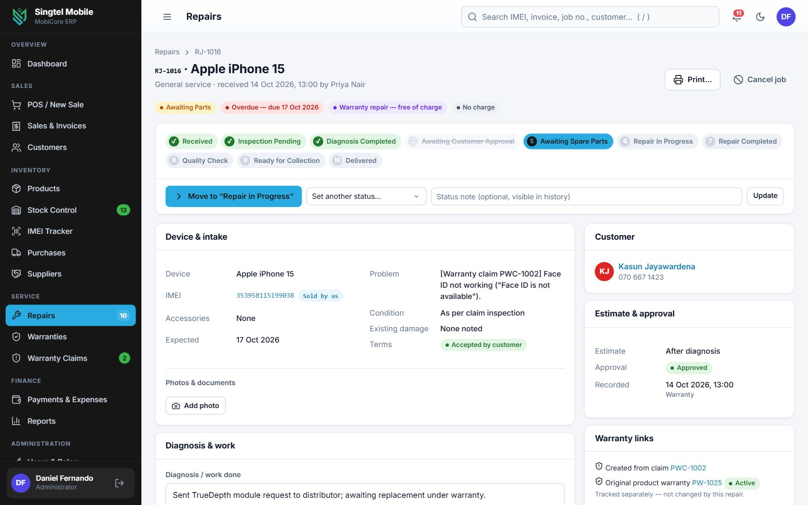
A job card: the progress bar, the "Move to next stage" button, device and customer details
Working on the job
Move to "next stage" moves the job forward one stage. Set another status… jumps to a different stage, and you can add a note that is saved in the history.
If the estimate needs approval, record the customer's answer with Customer approved or Customer rejected. The repair cannot start without approval, except for warranty repairs.
Diagnosis & work: record what was found and done. This is required before marking the job Ready.
Parts & charges:Issue part from stock takes a spare part out of stock and adds it to the job. Then set the labour charge and discount. If the part is out of stock, set the job to Awaiting Spare Parts and order it.
Print… prints the job receipt, repair estimate, repair invoice or delivery receipt.
Hand the device back (delivery)
When the job is Ready for Collection, click Deliver to customer.
Collect any balance. Only a manager can allow delivery with money still owed.
Enter who collected the device and who handed it over.
Check the repair warranty days for labour and each part. These come from the repair type and are separate from the phone's original warranty.
The customer signs on the screen (finger, stylus or mouse) and confirms the device works and all accessories were returned.
Click Confirm delivery. Print the Delivery receipt and the Warranty card (RW-…).
12Warranties
The system keeps two kinds of warranty. A product warranty (PW-…) is created when a phone or accessory is sold. A repair warranty (RW-…) is created when a repaired device is delivered. Both are created automatically.
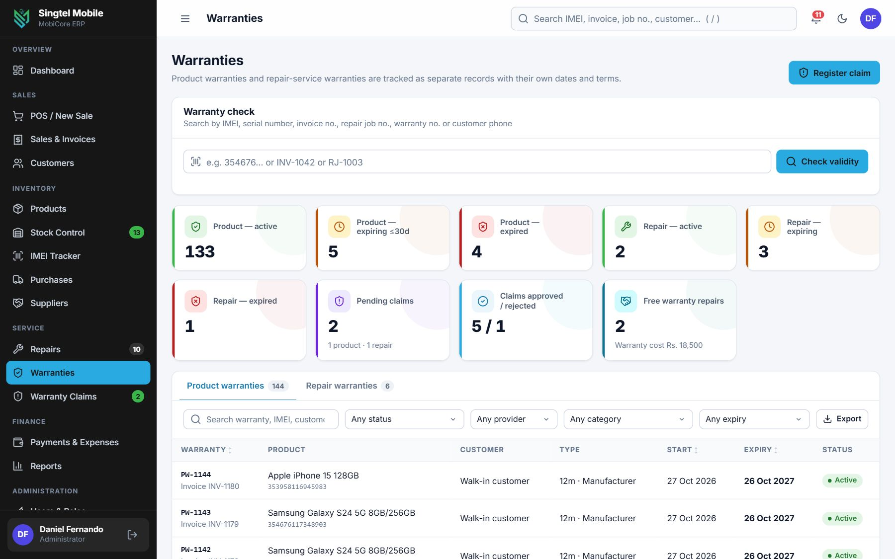
Warranty check box, summary figures and the product / repair warranty lists
Check a warranty at the counter
Open Warranties. In Warranty check, type the IMEI, serial, invoice number, job number, warranty number or the customer's phone.
Click Check validity. The result shows Valid — n days remaining, Expired n days ago, Void (for example the phone was returned) or Unit replaced (coverage moved to the new phone).
From the result you can open the details or click Register claim.
Status
Meaning
Active
Covered.
Expiring soon
Covered, but ends within 30 days (adjustable in Settings).
Expired
The end date has passed.
Void
Cancelled, for example because the item was returned or the invoice was cancelled.
Replaced
The phone was swapped under warranty. The new phone carries the warranty now.
A warranty's page has Print certificate / Print warranty card and PDF. Managers can also click Extend to add months or days, with a reason.
13Warranty claims & replacements
Use a claim whenever a customer brings back something still under warranty. The claim records the fault, the inspection, the decision and how it was solved.
In Warranties, find the warranty with Warranty check and click Register claim.
Type the Reported fault (the customer's words).
Inspect the device at the counter and tick any exclusions: physical / impact damage, liquid damage, opened or repaired elsewhere. The system shows "Eligible under warranty terms" or "Likely not eligible".
Add notes and photos, then click Register claim. The claim number is PWC-… for a product or RWC-… for a repair.
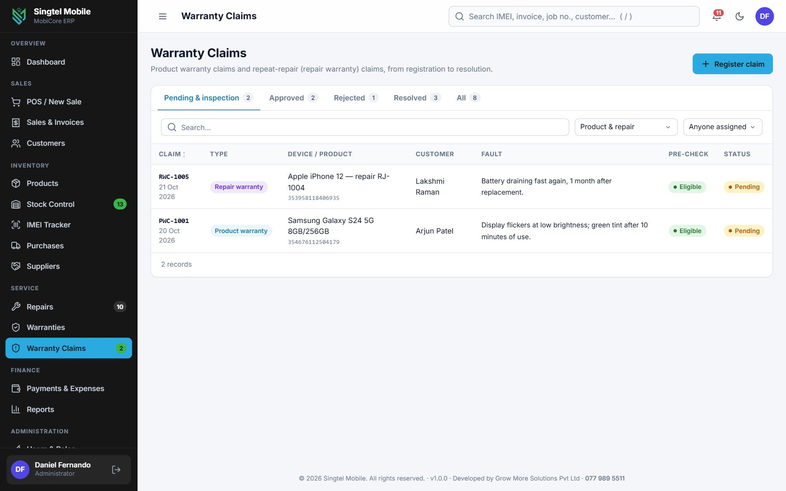
Warranty Claims, with tabs by stage
2. Decide (manager)
Open the claim and click Process claim. Assign it, move it to Under inspection, record the findings, then Approve or Reject it with a note. If the terms are not met but you want to help the customer, tick Goodwill override to approve anyway.
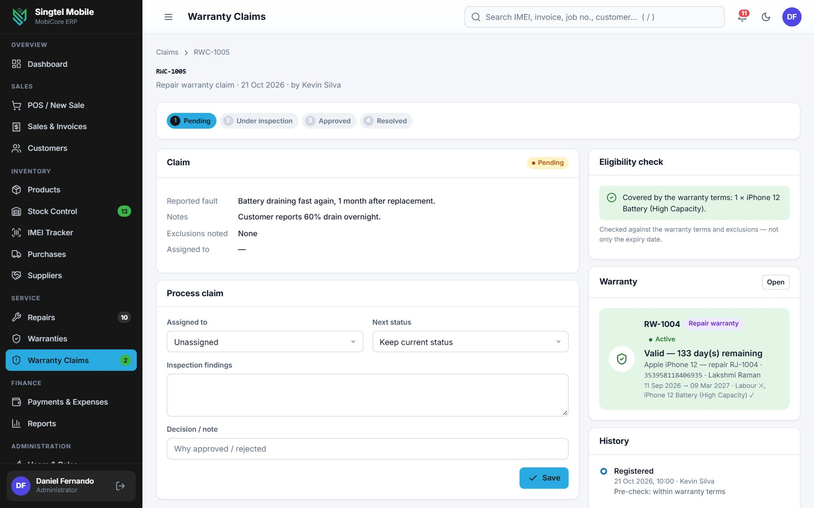
A claim with its decision and outcome options
3. Solve it
Repair it free
Click Create free warranty repair job. A no-charge repair job linked to the claim is created and follows the normal repair steps (chapter 11).
Give a new phone
Click Replace with new unit and follow the steps below. Refund and Other are also available as outcomes.
Replacing a faulty phone with a new one
The Warranty replacement window shows the defective unit coming back and the replacement unit going to the customer side by side.
Choose the replacement model (same model or same category), then scan or pick the new IMEI from stock.
Choose the warranty for the new phone. You must always pick one:
Continue the remaining original warranty, until the old end date;
n months from today; or
Until a date you choose.
Add a note (for example the RMA reference) and click Confirm replacement. Print the Replacement warranty card for the customer.
What the system does for you
The faulty phone becomes Warranty return (defective). It cannot be sold, and you can send it back to the supplier with Purchases → Return to supplier.
The new phone is marked as sold to the same customer, with a new warranty (PW-…).
The old warranty is marked Replaced, the claim is resolved and a replacement record (RPL-…) is created.
Both phones' histories link to each other: "defective X replaced by Y". The original invoice stays unchanged and shows the swap.
14Payments & expenses
Payments & Expenses shows money in and out for any period: Today, This week, This month, Last month, This year, or Custom dates.
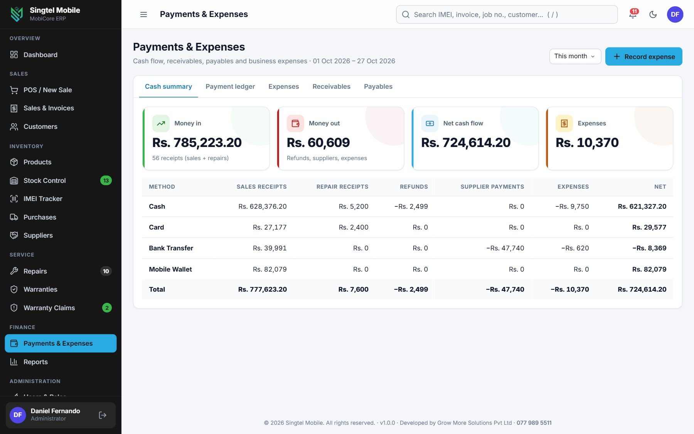
Cash summary by payment method
Tab
Shows
Cash summary
Money in, money out, net cash flow and expenses, by payment method. Use it to close the cash drawer.
Payment ledger
Every payment: sales receipts, repair receipts, refunds, supplier payments and expenses.
Expenses
All expenses with a chart by category.
Receivables
Customers who owe money. Click Receive to collect.
Payables
What the shop owes suppliers.
Record an expense
Click Record expense.
Choose the Category, enter the Amount and date (not in the future), who paid, and a note.
Save. The expense gets a number (EXP-…). A wrong entry can be voided with a reason; it stays visible, marked void.
15Reports
Reports gives a full picture of the business for any period. Every report can be printed or saved with Print / PDF, or exported to Excel with Excel (CSV).
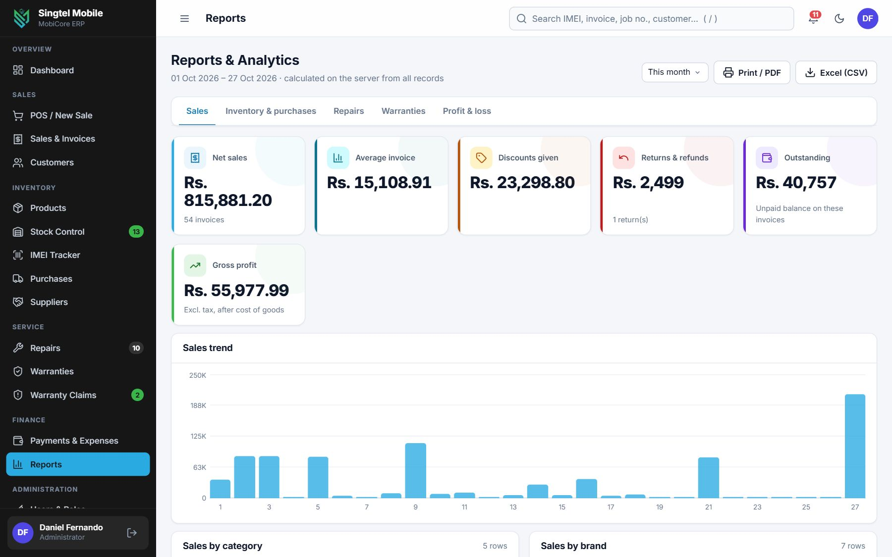
Reports & Analytics
Report
What you learn
Sales
Net sales, average invoice, discounts, returns, outstanding and gross profit. Breakdowns by category, brand, top products, staff and payment method.
Inventory & purchases
Stock value by category, low and out-of-stock items, stock movements, IMEI stock by product, purchases by supplier, damaged / returned / RMA units.
Repairs
Jobs received and delivered, average turnaround time, revenue, jobs by status and technician, parts used, overdue jobs, repeat and warranty repairs.
Warranties
Warranties by status, those expiring in the next 60 days, claims and decisions, unit replacements, warranty repair costs.
Profit & loss
12-month profit and loss with a net profit chart. Managers and owner only.
16Staff accounts & permissions
For the owner / administrator. Users & Roles has two tabs: Staff accounts and Roles & permissions.
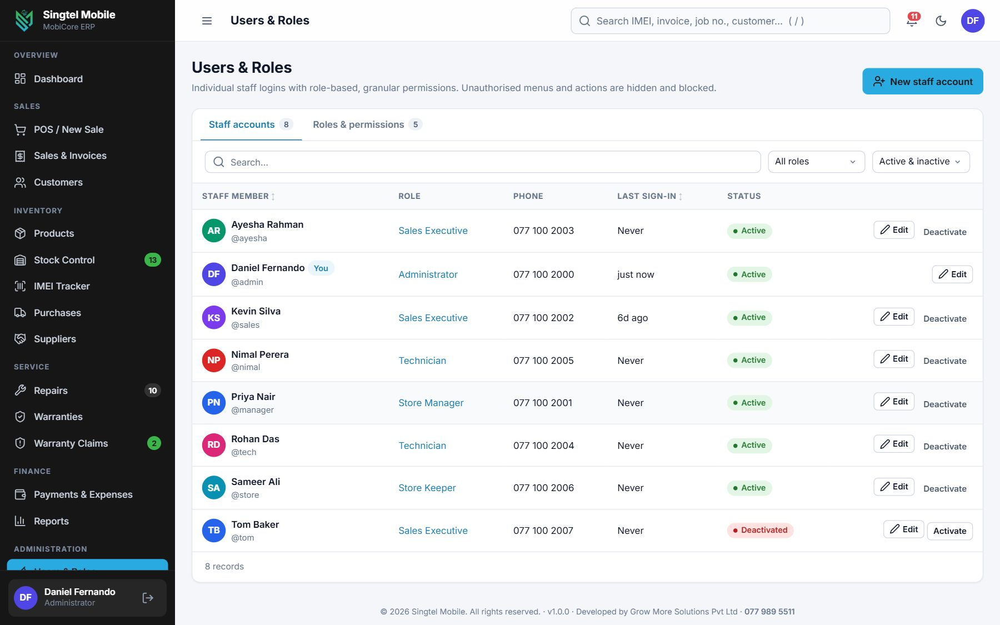
Staff accounts
Add a staff member
Click New staff account.
Enter the Full name, a Username (lowercase letters, numbers, dots or underscores, at least 3 characters), the Role, and a Password of at least 8 characters. Phone and email are optional.
Click Save account and give the person their username and password. Ask them to change the password after their first sign-in (chapter 1).
When someone leaves
Click Deactivate on their account. They are signed out immediately and can no longer sign in, but all their sales and history are kept. Accounts are never deleted. To reset a forgotten password, edit the account and enter a new one in Reset password.
Changing what a role can do
In Roles & permissions, each role has a grid of modules (POS, Sales, Inventory, Repairs…) and actions: View, Create, Edit, Delete, Approve, Print, Export, Refund, Cancel, Deliver and Manage. Tick what the role may do and click Save permissions. New role can copy permissions from an existing role as a starting point.
Safety rulesThe Administrator role cannot be deleted, at least one active administrator must always exist, and you cannot change your own role or deactivate yourself.
17Settings & activity log
Settings (administrator) controls the shop details printed on documents, tax, warranty rules and repair types. Each section has its own Save button.
Settings are password-protected
Every time you open Settings, the system asks you to confirm your password. This protects tax, invoice and warranty settings on a shared shop PC. After you confirm, you can make changes for 15 minutes; then it asks again. A wrong password is recorded in the Activity Log. If you click Cancel, the page stays locked until you click Enter password.
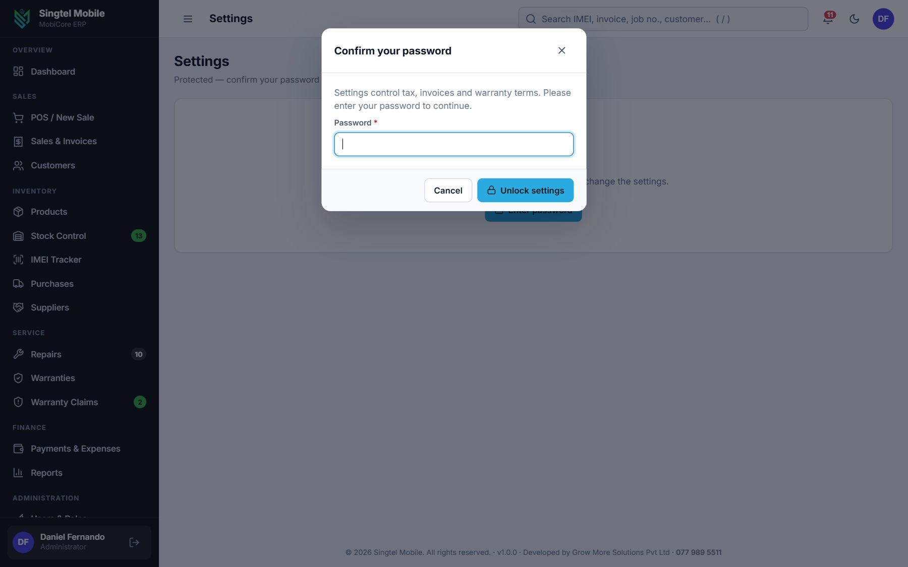
"Confirm your password" when opening Settings
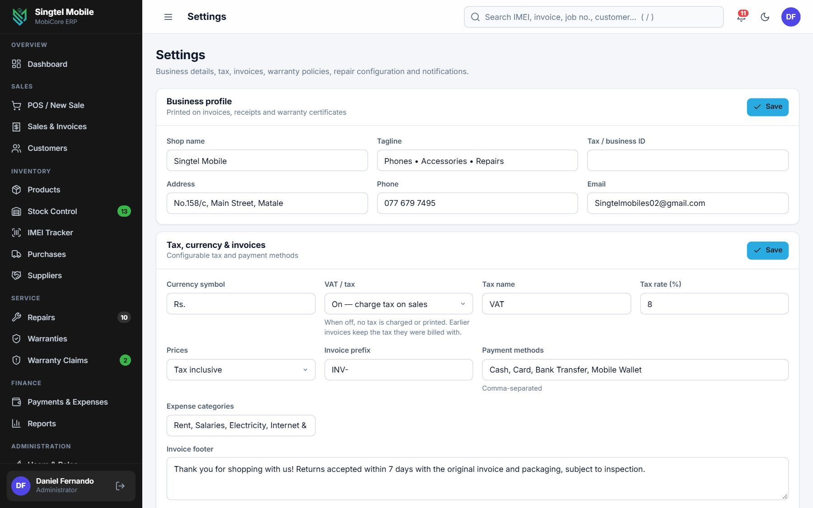
Settings
Section
What to set
Business profile
Shop name, tagline, tax / business ID, address, phone and email. These appear on invoices, receipts and warranty cards.
Tax, currency & invoices
VAT / tax On or Off, currency (Rs.), tax name and rate, whether prices include tax, invoice prefix, payment methods, expense categories, invoice footer text.
Product warranty policy
The "expiring soon" warning period, default warranty months per category, and the terms printed for new and used / refurbished items.
Repairs & repair warranty
Whether the repair warranty starts at delivery or at completion, whether a customer signature is required at delivery, repair types with their labour warranty days, and the repair terms text.
Notifications
Which alerts appear in the bell.
Switching VAT on or off
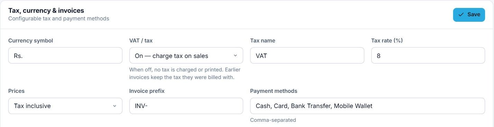
The VAT / tax switch in Settings → Tax, currency & invoices
Open Settings and confirm your password.
In Tax, currency & invoices, set VAT / tax to On — charge tax on sales or Off — no tax on bills.
Click Save. New sales and quotations follow the new setting straight away.
With VAT off, no VAT is added or shown at the POS, on invoices, quotations or PDFs, and invoices are titled "Invoice" instead of "Tax Invoice". Invoices made earlier keep the VAT they were billed with. The switch applies to the whole shop, not to one bill.
Before going liveAsk your accountant whether the shop must charge VAT. If it must, confirm the correct VAT rate and VAT number; the system was delivered with a placeholder rate of 8%. If the shop is not VAT-registered, switch VAT Off. Check the warranty and repair terms text too, because it is printed on every customer document.
Activity log
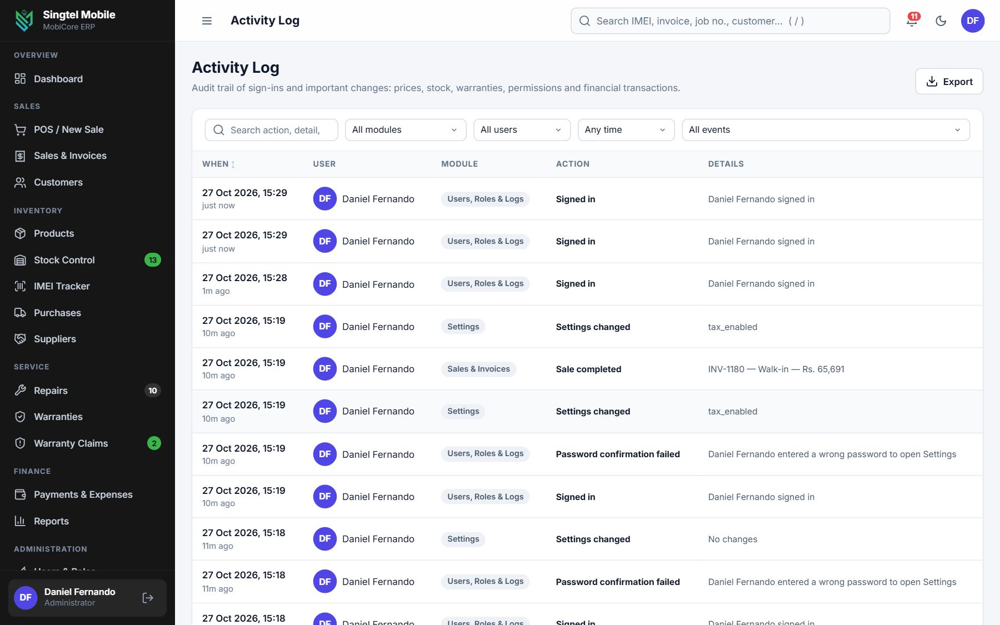
Activity log: who did what, and when
The Activity Log records every sign-in (including failed attempts) and every change, with the time, staff name and details. Tick Sensitive only to see refunds, permission changes, stock adjustments, warranty changes and price changes.
18Messages, FAQ & support
Common messages and what to do
Message
What to do
Select the warranty period for n phone(s) before charging.
Choose a warranty (or "No warranty") for each phone in the cart.
That IMEI is already in the cart.
The phone is already added. Pick a different unit.
… is sold / under repair — cannot be sold.
That IMEI is not in stock. Search it in IMEI Tracker to see why.
Partial payment / credit requires a registered customer.
Choose or add the customer instead of Walk-in.
Overpayment is only allowed in cash.
Card, bank and wallet payments must match the amount exactly. Give change only for cash.
… is already registered … Duplicate IMEI/serial registration is blocked.
That IMEI is already in the system. Check whether it is a returned unit.
Invalid IMEI — check digit failed.
The number was mistyped or mis-scanned. Scan it again.
Customer must accept the repair terms before the job is created.
Read the terms to the customer and tick the box.
Customer signature is required for delivery.
Ask the customer to sign in the signature box.
Incorrect password. (when opening Settings)
Type your own sign-in password again. Ask the administrator if you have forgotten it.
Please confirm your password to change settings.
More than 15 minutes have passed. Enter your password again and save.
A percentage discount cannot be more than 100%.
Enter a percentage between 1 and 100.
Access denied — your role does not have … permission.
Ask a manager. Your role isn't allowed this action.
Your session has expired. Please sign in again.
Sign in again. Sessions last up to 12 hours.
Frequently asked questions
Can I delete a wrong sale?
No. Sales are never deleted, so that records stay honest. A manager can cancel the invoice, or use Return / refund. Both are kept in the history.
A customer lost the invoice. How do I prove the warranty?
Search the phone's IMEI or the customer's phone number. The invoice and warranty appear instantly, and you can reprint both.
Some sales don't need VAT. What do I do?
VAT is switched on or off for the whole shop in Settings → Tax, currency & invoices (chapter 17). Ask your accountant which applies to your business. Old invoices are never changed by the switch.
How do I give "10% off"?
At the POS, click % next to Discount and type 10. The invoice prints "Discount (10% off)". Only roles allowed to give discounts (POS Edit) can do this.
The screen looks old after an update.
Press Ctrl + F5 once to reload the page.
Is my data backed up?
Yes. The database and uploaded files are backed up automatically every night on the server.
Can I use it when the internet is down?
No. The system needs an internet connection, because all staff share one live database. Keep a mobile data hotspot as a backup connection for the shop PC.
SupportFor help, training or changes, contact Grow More Solutions Pvt Ltd on 077 989 5511. Please tell us your username, the screen you were on and the exact message you saw. A screenshot helps a lot.